Los árboles de decisión son uno de los métodos más intuitivos y ampliamente utilizados en el aprendizaje supervisado. A diferencia de los métodos lineales como la regresión logística, los árboles pueden capturar relaciones no lineales complejas e interacciones entre variables de forma natural, produciendo modelos que son fáciles de interpretar y visualizar.
Motivación: Limitaciones de los Métodos Lineales
Consideremos un problema donde queremos predecir si un cliente comprará un producto basándonos en su edad y su ingreso. Los métodos lineales (como regresión logística) asumirían que existe una frontera de decisión lineal:
Sin embargo, la realidad puede ser más compleja: tal vez los clientes jóvenes con ingresos altos compran, los clientes mayores con cualquier ingreso compran, pero los clientes jóvenes con ingresos bajos no compran. Esta regla no es lineal y involucra interacciones entre variables.
Los árboles de decisión resuelven este problema al particionar el espacio de características en regiones rectangulares, donde cada región tiene su propia predicción.
Estructura de un Árbol de Decisión
Un árbol de decisión es una estructura jerárquica compuesta por:
Nodo raíz (root node): Contiene todos los datos de entrenamiento
Nodos internos (internal nodes): Representan decisiones basadas en características
Ramas (branches): Representan el resultado de una decisión
Nodos hoja o terminales (leaf nodes): Contienen las predicciones finales
Cada nodo interno realiza una pregunta binaria sobre una característica:
“¿Edad ≤ 30?”
“¿Ingreso > $50,000?”
“¿Categoría = A o B?”
Ejemplo Visual Simple
[Edad ≤ 30?]
/ \
Sí No
/ \
[Ingreso ≤ 40K?] Compra = Sí
/ \
Sí No
/ \
Compra = No Compra = Sí
Este árbol representa las siguientes reglas:
Si edad > 30 → Compra = Sí
Si edad ≤ 30 y ingreso > 40K → Compra = Sí
Si edad ≤ 30 y ingreso ≤ 40K → Compra = No
Construcción de Árboles de Decisión
Particionamiento Recursivo del Espacio
Los árboles de decisión construyen su estructura mediante particionamiento recursivo binario (recursive binary splitting). Este proceso:
Comienza con todos los datos en el nodo raíz
Encuentra la mejor división (variable y punto de corte)
Divide los datos en dos nodos hijos
Repite el proceso recursivamente para cada nodo hijo
Se detiene cuando se cumple un criterio de parada
Matemáticamente, el espacio de características \(\mathbb{R}^p\) se divide en \(M\) regiones disjuntas \(R_1, R_2, ..., R_M\) tales que:
\[\bigcup_{m=1}^{M} R_m = \mathbb{R}^p, \quad R_i \cap R_j = \emptyset \text{ para } i \neq j\]
Cada región \(R_m\) es un hiperrectángulo paralelo a los ejes de coordenadas.
Criterios de Impureza
Para decidir cómo dividir un nodo, necesitamos medir la impureza o heterogeneidad de un nodo. Un nodo es “puro” si contiene mayormente ejemplos de una sola clase.
1. Índice de Gini
El índice de Gini mide la probabilidad de clasificar incorrectamente un elemento elegido aleatoriamente si se etiqueta aleatoriamente según la distribución de clases del nodo:
Gini y Entropía son muy similares en comportamiento y suelen dar resultados comparables
Error de clasificación es menos sensible a cambios en las probabilidades
En la práctica, Gini es más común por ser más eficiente computacionalmente
Todas alcanzan su máximo cuando las clases están balanceadas (\(p = 0.5\))
Algoritmo de Construcción CART
El algoritmo CART (Classification And Regression Trees) es el método más común para construir árboles de decisión:
Algoritmo: Construcción Greedy de Árbol de Decisión
función CONSTRUIR_ARBOL(datos, profundidad_actual, max_profundidad):
// Criterios de parada
si profundidad_actual >= max_profundidad O
nodo es puro O
número de muestras < min_muestras:
crear nodo hoja con predicción mayoritaria
retornar
// Encontrar mejor división
mejor_ganancia = -infinito
para cada característica j en {1, ..., p}:
para cada posible punto de corte c:
dividir datos en: {x_j ≤ c} y {x_j > c}
calcular impureza ponderada de los nodos hijos
calcular ganancia = impureza_padre - impureza_hijos
si ganancia > mejor_ganancia:
mejor_ganancia = ganancia
mejor_característica = j
mejor_corte = c
// Crear división
crear nodo interno con pregunta: "x[mejor_característica] ≤ mejor_corte?"
datos_izq = datos donde x[mejor_característica] ≤ mejor_corte
datos_der = datos donde x[mejor_característica] > mejor_corte
// Recursión
hijo_izquierdo = CONSTRUIR_ARBOL(datos_izq, profundidad_actual + 1, max_profundidad)
hijo_derecho = CONSTRUIR_ARBOL(datos_der, profundidad_actual + 1, max_profundidad)
retornar nodo_actual
Características clave del algoritmo:
Greedy (Voraz): En cada paso, elige la mejor división local sin considerar divisiones futuras
Top-down: Construye desde la raíz hacia las hojas
Recursivo: Aplica el mismo proceso a cada subárbol
Binario: Cada división genera exactamente dos nodos hijos
Ejemplo: Construcción Paso a Paso
import numpy as npimport pandas as pdfrom sklearn.tree import DecisionTreeClassifierfrom sklearn.datasets import make_classificationimport matplotlib.pyplot as plt# Generar datos sintéticos simples (2D para visualización)np.random.seed(42)X, y = make_classification( n_samples=200, n_features=2, n_informative=2, n_redundant=0, n_clusters_per_class=1, flip_y=0.1, class_sep=1.5, random_state=42)# Crear DataFrame para mejor visualizacióndf = pd.DataFrame(X, columns=['X1', 'X2'])df['Clase'] = yprint("Datos de ejemplo:")print("="*60)print(df.head(10))print(f"\nTotal de muestras: {len(df)}")print(f"Clases: {df['Clase'].value_counts().to_dict()}")
from sklearn.tree import plot_tree# Entrenar árboles con diferentes profundidadesprofundidades = [1, 2, 3, 5]fig, axes = plt.subplots(2, 2, figsize=(14, 10))axes = axes.ravel()for idx, depth inenumerate(profundidades):# Entrenar árbol tree = DecisionTreeClassifier( max_depth=depth, criterion='gini', random_state=42 ) tree.fit(X, y)# Visualizar árbol plot_tree( tree, ax=axes[idx], feature_names=['X1', 'X2'], class_names=['Clase 0', 'Clase 1'], filled=True, rounded=True, fontsize=9 )# Calcular accuracy en entrenamiento train_accuracy = tree.score(X, y) axes[idx].set_title(f'Profundidad = {depth} | Accuracy = {train_accuracy:.3f}', fontsize=12, pad=10 )plt.tight_layout()plt.show()# Mostrar información detallada del árbol más complejoprint("\n"+"="*60)print("INFORMACIÓN DEL ÁRBOL (Profundidad = 5)")print("="*60)tree_detailed = DecisionTreeClassifier(max_depth=5, random_state=42)tree_detailed.fit(X, y)print(f"Número de nodos: {tree_detailed.tree_.node_count}")print(f"Número de hojas: {tree_detailed.get_n_leaves()}")print(f"Profundidad real: {tree_detailed.get_depth()}")print(f"Accuracy en entrenamiento: {tree_detailed.score(X, y):.3f}")
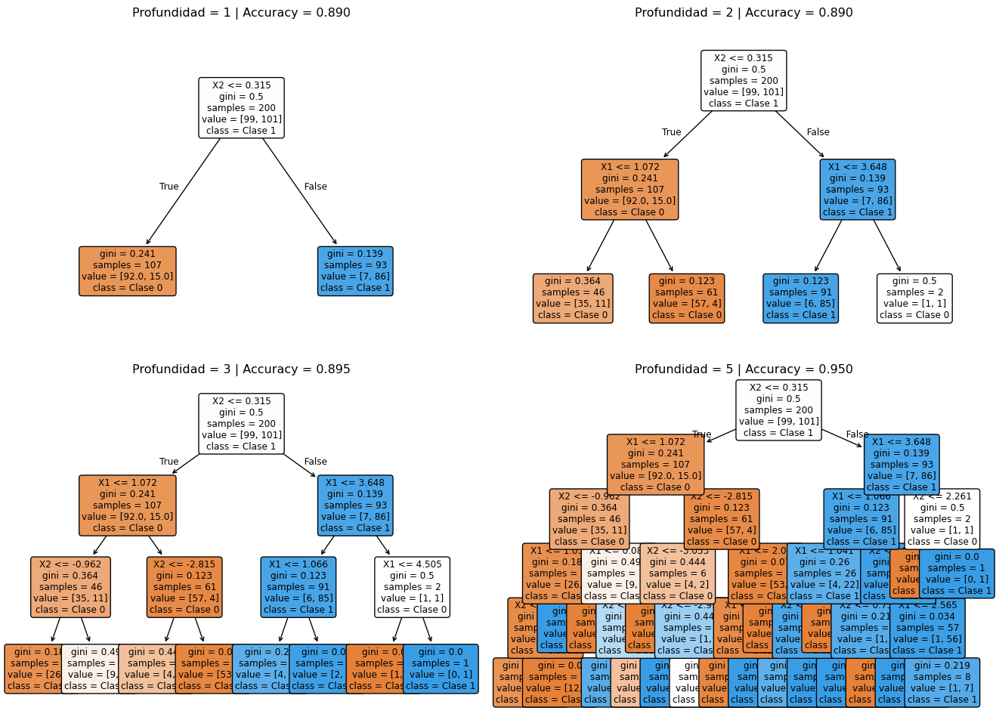
Comparación de árboles con diferentes profundidades
============================================================
INFORMACIÓN DEL ÁRBOL (Profundidad = 5)
============================================================
Número de nodos: 41
Número de hojas: 21
Profundidad real: 5
Accuracy en entrenamiento: 0.950
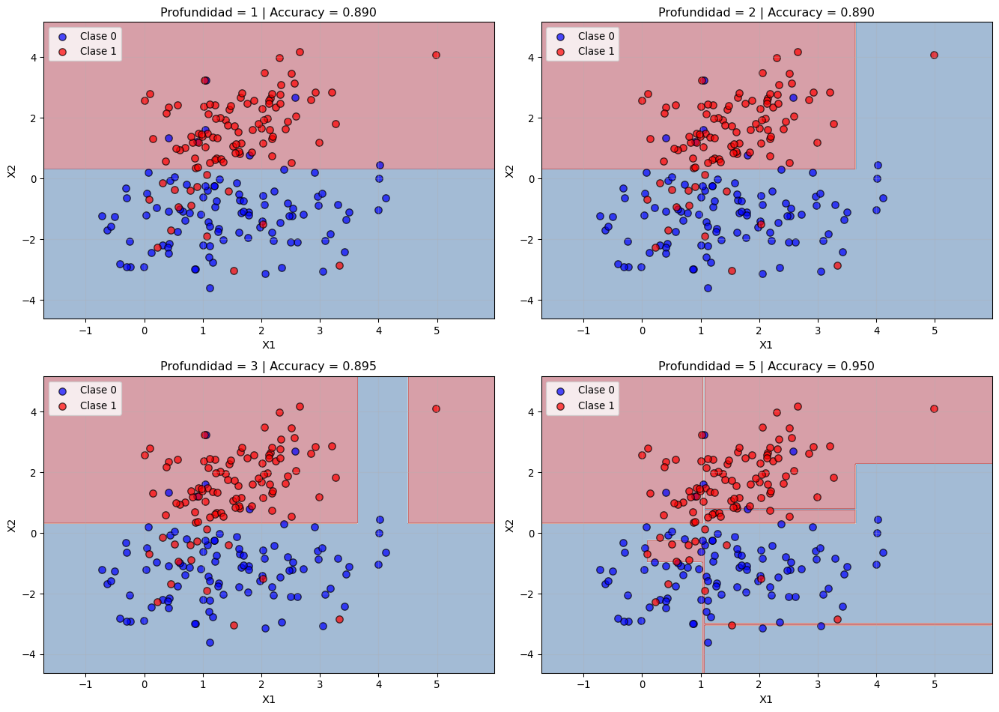
Fronteras de decisión para diferentes profundidades de árbol
Observaciones importantes:
Profundidad = 1 (stump): Una sola división, frontera muy simple
Profundidad = 2-3: Capturas las principales regiones de decisión
Profundidad = 5: Frontera muy compleja, posible sobreajuste
Las fronteras son siempre paralelas a los ejes (particiones rectangulares)
Sobreajuste y Control de Complejidad
El Problema del Sobreajuste
Los árboles de decisión tienen una tendencia natural al sobreajuste (overfitting). Sin restricciones, un árbol puede crecer hasta que cada nodo hoja contenga un solo ejemplo, logrando 100% de accuracy en entrenamiento pero generalizando muy mal.
Causas del sobreajuste:
Alta varianza: Pequeños cambios en los datos pueden producir árboles muy diferentes
Falta de regularización inherente: Sin restricciones, el árbol memoriza los datos
Captura de ruido: El árbol aprende patrones específicos del conjunto de entrenamiento
Estrategias de Control de Complejidad
1. Pre-Poda (Pre-Pruning)
La pre-poda detiene el crecimiento del árbol durante su construcción mediante criterios:
Hiperparámetros comunes:
max_depth: Profundidad máxima del árbol
Valores típicos: 3-10
Menor → Más sesgo, menos varianza
min_samples_split: Mínimo de muestras para dividir un nodo
Valores típicos: 2-20
Mayor → Árbol más pequeño
min_samples_leaf: Mínimo de muestras en una hoja
Valores típicos: 1-10
Mayor → Hojas más confiables
max_features: Número máximo de características a considerar por división
'sqrt': √p características (usado en Random Forest)
'log2': log₂(p) características
None: Todas las características
max_leaf_nodes: Número máximo de nodos hoja
Controla directamente el tamaño del árbol
2. Post-Poda (Post-Pruning)
La post-poda construye un árbol completo y luego lo reduce eliminando nodos que no aportan suficiente mejora.
Cost-Complexity Pruning (Poda por Costo-Complejidad):
Define una función de costo que balancea error y complejidad:
\(\hat{y}_m\) es la predicción en el nodo hoja \(m\)
Efecto de \(\alpha\):
\(\alpha = 0\): Árbol completo (sin poda)
\(\alpha\) grande: Árbol muy pequeño (mayor regularización)
from sklearn.model_selection import train_test_splitfrom sklearn.tree import DecisionTreeClassifier# Dividir datosX_train, X_test, y_train, y_test = train_test_split( X, y, test_size=0.3, random_state=42)# Entrenar árbol completotree_full = DecisionTreeClassifier(random_state=42)tree_full.fit(X_train, y_train)# Obtener camino de cost-complexity pruningpath = tree_full.cost_complexity_pruning_path(X_train, y_train)ccp_alphas = path.ccp_alphasimpurities = path.impuritiesprint("Cost-Complexity Pruning Path:")print("="*60)print(f"Número de valores de alpha: {len(ccp_alphas)}")print(f"Rango de alpha: [{ccp_alphas[0]:.6f}, {ccp_alphas[-1]:.6f}]")# Entrenar árboles para diferentes valores de alphatrain_scores = []test_scores = []n_leaves = []depths = []for alpha in ccp_alphas: tree = DecisionTreeClassifier(random_state=42, ccp_alpha=alpha) tree.fit(X_train, y_train) train_scores.append(tree.score(X_train, y_train)) test_scores.append(tree.score(X_test, y_test)) n_leaves.append(tree.get_n_leaves()) depths.append(tree.get_depth())# Visualizaciónfig, axes = plt.subplots(1, 3, figsize=(15, 4))# Panel 1: Accuracy vs Alphaaxes[0].plot(ccp_alphas, train_scores, label='Entrenamiento', marker='o', linewidth=2)axes[0].plot(ccp_alphas, test_scores, label='Prueba', marker='s', linewidth=2)axes[0].set_xlabel('Alpha (ccp_alpha)', fontsize=11)axes[0].set_ylabel('Accuracy', fontsize=11)axes[0].set_title('Accuracy vs Alpha', fontsize=12)axes[0].legend()axes[0].grid(True, alpha=0.3)# Encontrar mejor alphabest_idx = np.argmax(test_scores)best_alpha = ccp_alphas[best_idx]axes[0].axvline(x=best_alpha, color='red', linestyle='--', label=f'Mejor α = {best_alpha:.4f}')# Panel 2: Número de hojas vs Alphaaxes[1].plot(ccp_alphas, n_leaves, marker='o', linewidth=2, color='green')axes[1].set_xlabel('Alpha (ccp_alpha)', fontsize=11)axes[1].set_ylabel('Número de Hojas', fontsize=11)axes[1].set_title('Complejidad del Árbol vs Alpha', fontsize=12)axes[1].grid(True, alpha=0.3)axes[1].axvline(x=best_alpha, color='red', linestyle='--')# Panel 3: Profundidad vs Alphaaxes[2].plot(ccp_alphas, depths, marker='o', linewidth=2, color='purple')axes[2].set_xlabel('Alpha (ccp_alpha)', fontsize=11)axes[2].set_ylabel('Profundidad del Árbol', fontsize=11)axes[2].set_title('Profundidad vs Alpha', fontsize=12)axes[2].grid(True, alpha=0.3)axes[2].axvline(x=best_alpha, color='red', linestyle='--')plt.tight_layout()plt.show()print(f"\n{'='*60}")print("COMPARACIÓN: Árbol sin poda vs Árbol podado")print("="*60)print(f"\nÁrbol sin poda (α = 0):")print(f" Hojas: {n_leaves[0]}")print(f" Profundidad: {depths[0]}")print(f" Accuracy entrenamiento: {train_scores[0]:.3f}")print(f" Accuracy prueba: {test_scores[0]:.3f}")print(f"\nÁrbol podado óptimo (α = {best_alpha:.4f}):")print(f" Hojas: {n_leaves[best_idx]}")print(f" Profundidad: {depths[best_idx]}")print(f" Accuracy entrenamiento: {train_scores[best_idx]:.3f}")print(f" Accuracy prueba: {test_scores[best_idx]:.3f}")
Cost-Complexity Pruning Path:
============================================================
Número de valores de alpha: 13
Rango de alpha: [0.000000, 0.309700]
Donde: - \(n_t\) es el número de muestras en el nodo \(t\) - \(n\) es el número total de muestras - \(\Delta I(t)\) es la reducción en impureza por la división en el nodo \(t\)
# Entrenar árbol en dataset con más característicasfrom sklearn.datasets import make_classification# Generar datos con 10 característicasX_multi, y_multi = make_classification( n_samples=500, n_features=10, n_informative=6, n_redundant=2, n_repeated=0, random_state=42)# Nombres de característicasfeature_names = [f'X{i+1}'for i inrange(10)]# Entrenar árboltree_multi = DecisionTreeClassifier(max_depth=5, random_state=42)tree_multi.fit(X_multi, y_multi)# Obtener importanciasimportances = tree_multi.feature_importances_indices = np.argsort(importances)[::-1]# Visualizaciónfig, axes = plt.subplots(1, 2, figsize=(12, 5))# Panel 1: Gráfico de barrasaxes[0].barh(range(10), importances[indices], color='steelblue', alpha=0.7)axes[0].set_yticks(range(10))axes[0].set_yticklabels([feature_names[i] for i in indices])axes[0].set_xlabel('Importancia', fontsize=11)axes[0].set_title('Importancia de Variables (Reducción de Impureza)', fontsize=12)axes[0].grid(True, alpha=0.3, axis='x')# Añadir valoresfor i, (idx, imp) inenumerate(zip(indices, importances[indices])): axes[0].text(imp +0.005, i, f'{imp:.3f}', va='center', fontsize=9)# Panel 2: Importancia acumuladacumsum_importance = np.cumsum(importances[indices])axes[1].plot(range(1, 11), cumsum_importance, marker='o', linewidth=2.5, markersize=8, color='darkgreen')axes[1].fill_between(range(1, 11), cumsum_importance, alpha=0.3, color='green')axes[1].axhline(y=0.8, color='red', linestyle='--', linewidth=1.5, label='80% de importancia')axes[1].axhline(y=0.95, color='orange', linestyle='--', linewidth=1.5, label='95% de importancia')axes[1].set_xlabel('Número de Variables', fontsize=11)axes[1].set_ylabel('Importancia Acumulada', fontsize=11)axes[1].set_title('Importancia Acumulada de Variables', fontsize=12)axes[1].set_xticks(range(1, 11))axes[1].legend()axes[1].grid(True, alpha=0.3)plt.tight_layout()plt.show()# Imprimir tabla de importanciasprint("\nTabla de Importancias:")print("="*60)print(f"{'Variable':<12}{'Importancia':<15}{'Importancia Acum.':<20}")print("-"*60)cumsum =0for idx in indices: cumsum += importances[idx]print(f"{feature_names[idx]:<12}{importances[idx]:<15.4f}{cumsum:<20.4f}")
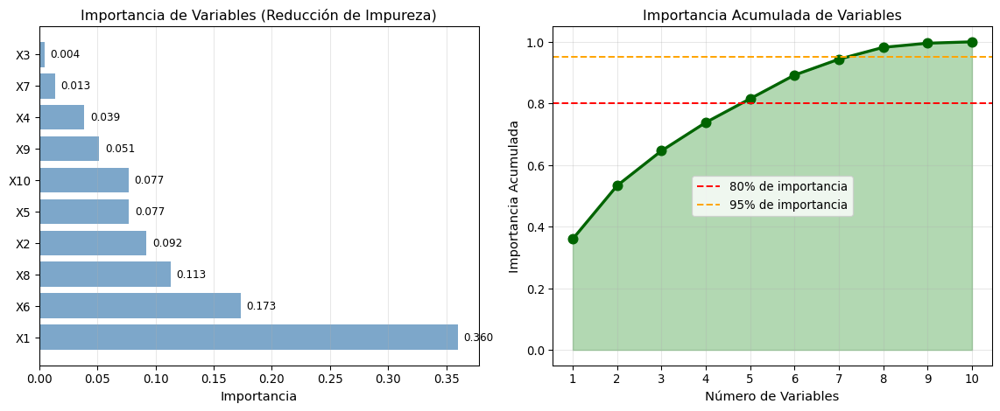
Importancia de variables en árbol de decisión
Tabla de Importancias:
============================================================
Variable Importancia Importancia Acum.
------------------------------------------------------------
X1 0.3599 0.3599
X6 0.1732 0.5331
X8 0.1130 0.6462
X2 0.0921 0.7383
X5 0.0771 0.8154
X10 0.0768 0.8921
X9 0.0514 0.9436
X4 0.0385 0.9821
X7 0.0134 0.9955
X3 0.0045 1.0000
Extracción de Reglas
Los árboles pueden convertirse en reglas IF-THEN interpretables:
from sklearn.tree import export_text# Entrenar árbol simple para mejor interpretabilidadtree_simple = DecisionTreeClassifier(max_depth=3, min_samples_leaf=10, random_state=42)tree_simple.fit(X[:, :2], y)# Exportar reglas como textotree_rules = export_text(tree_simple, feature_names=['X1', 'X2'])print("REGLAS DE DECISIÓN DEL ÁRBOL:")print("="*60)print(tree_rules)# Función para extraer rutas de decisióndef get_decision_path(tree, feature_names, sample):"""Extrae la ruta de decisión para una muestra""" node =0 path = []while tree.tree_.feature[node] !=-2: # -2 indica nodo hoja feature_idx = tree.tree_.feature[node] threshold = tree.tree_.threshold[node]if sample[feature_idx] <= threshold: direction ="<=" node = tree.tree_.children_left[node]else: direction =">" node = tree.tree_.children_right[node] path.append(f"{feature_names[feature_idx]}{direction}{threshold:.3f}")# Obtener predicción class_probs = tree.tree_.value[node][0] predicted_class = np.argmax(class_probs)return path, predicted_class, class_probs# Ejemplo: explicar predicción para algunas muestrasprint("\n"+"="*60)print("EXPLICACIÓN DE PREDICCIONES")print("="*60)for i inrange(3): sample = X[i, :2] path, pred_class, probs = get_decision_path(tree_simple, ['X1', 'X2'], sample)print(f"\nMuestra {i+1}: X1={sample[0]:.3f}, X2={sample[1]:.3f}")print(f"Clase real: {y[i]}")print(f"Predicción: {pred_class}")print(f"Probabilidades: Clase 0 = {probs[0]:.3f}, Clase 1 = {probs[1]:.3f}")print("Ruta de decisión:")for step in path:print(f" → {step}")
Dificultad con relaciones lineales: Necesitan muchas divisiones para aproximar funciones lineales
Fronteras de decisión restrictivas: Solo particiones rectangulares paralelas a los ejes
Sesgo hacia variables con muchos valores: Tienden a seleccionar variables con más opciones de corte
Inestabilidad: Pequeñas variaciones pueden cambiar completamente la estructura
Sobreajuste natural: Sin restricciones, memorizan los datos de entrenamiento
Comparación Visual: Árbol vs Regresión Logística
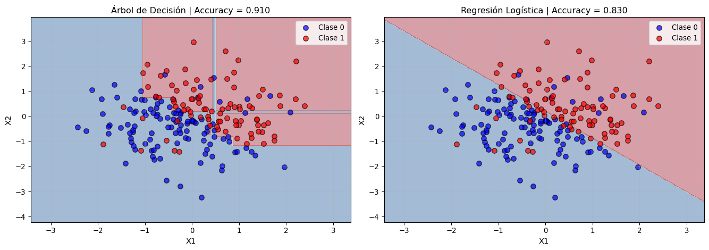
Comparación de fronteras de decisión: Árbol vs Regresión Logística
Observaciones:
============================================================
- Regresión logística captura mejor la relación lineal subyacente
- Árbol de decisión crea fronteras rectangulares que aproximan la línea
- Para relaciones lineales, la regresión logística es más eficiente
- Para relaciones no lineales, los árboles son más flexibles
Aplicación Práctica: Dataset Real
from sklearn.datasets import load_breast_cancerfrom sklearn.model_selection import cross_val_score, GridSearchCVimport pandas as pd# Cargar datasetcancer = load_breast_cancer()X_cancer = cancer.datay_cancer = cancer.targetprint("DATASET: Wisconsin Breast Cancer")print("="*60)print(f"Número de muestras: {X_cancer.shape[0]}")print(f"Número de características: {X_cancer.shape[1]}")print(f"Clases: {cancer.target_names}")print(f"Distribución: {np.bincount(y_cancer)}")# Dividir datosX_train_c, X_test_c, y_train_c, y_test_c = train_test_split( X_cancer, y_cancer, test_size=0.3, random_state=42, stratify=y_cancer)# 1. Árbol sin regularizacióntree_unreg = DecisionTreeClassifier(random_state=42)tree_unreg.fit(X_train_c, y_train_c)print("\n1. ÁRBOL SIN REGULARIZACIÓN")print("-"*60)print(f"Profundidad: {tree_unreg.get_depth()}")print(f"Número de hojas: {tree_unreg.get_n_leaves()}")print(f"Accuracy entrenamiento: {tree_unreg.score(X_train_c, y_train_c):.3f}")print(f"Accuracy prueba: {tree_unreg.score(X_test_c, y_test_c):.3f}")# 2. Búsqueda de hiperparámetros óptimosparam_grid = {'max_depth': [3, 5, 7, 10, None],'min_samples_split': [2, 5, 10, 20],'min_samples_leaf': [1, 2, 5, 10],'criterion': ['gini', 'entropy']}print("\n2. BÚSQUEDA DE HIPERPARÁMETROS (Grid Search)")print("-"*60)print("Evaluando combinaciones de hiperparámetros con CV...")grid_search = GridSearchCV( DecisionTreeClassifier(random_state=42), param_grid, cv=5, scoring='accuracy', n_jobs=-1)grid_search.fit(X_train_c, y_train_c)print(f"Mejor combinación de parámetros:")for param, value in grid_search.best_params_.items():print(f" {param}: {value}")# 3. Evaluar mejor modelobest_tree = grid_search.best_estimator_print("\n3. MEJOR ÁRBOL (después de optimización)")print("-"*60)print(f"Profundidad: {best_tree.get_depth()}")print(f"Número de hojas: {best_tree.get_n_leaves()}")print(f"Accuracy entrenamiento: {best_tree.score(X_train_c, y_train_c):.3f}")print(f"Accuracy prueba: {best_tree.score(X_test_c, y_test_c):.3f}")# 4. Validación cruzadacv_scores = cross_val_score(best_tree, X_train_c, y_train_c, cv=5)print(f"\nValidación cruzada (5-fold):")print(f" Scores: {cv_scores}")print(f" Media: {cv_scores.mean():.3f} (+/- {cv_scores.std():.3f})")
DATASET: Wisconsin Breast Cancer
============================================================
Número de muestras: 569
Número de características: 30
Clases: ['malignant' 'benign']
Distribución: [212 357]
1. ÁRBOL SIN REGULARIZACIÓN
------------------------------------------------------------
Profundidad: 6
Número de hojas: 16
Accuracy entrenamiento: 1.000
Accuracy prueba: 0.918
2. BÚSQUEDA DE HIPERPARÁMETROS (Grid Search)
------------------------------------------------------------
Evaluando combinaciones de hiperparámetros con CV...
Mejor combinación de parámetros:
criterion: gini
max_depth: 3
min_samples_leaf: 2
min_samples_split: 2
3. MEJOR ÁRBOL (después de optimización)
------------------------------------------------------------
Profundidad: 3
Número de hojas: 7
Accuracy entrenamiento: 0.980
Accuracy prueba: 0.924
Validación cruzada (5-fold):
Scores: [0.9 0.95 0.9 0.97468354 1. ]
Media: 0.945 (+/- 0.040)
# Importancia de característicasimportances_cancer = best_tree.feature_importances_indices_cancer = np.argsort(importances_cancer)[::-1][:10] # Top 10plt.figure(figsize=(10, 6))plt.barh(range(10), importances_cancer[indices_cancer], color='coral', alpha=0.7)plt.yticks(range(10), [cancer.feature_names[i] for i in indices_cancer])plt.xlabel('Importancia (Reducción de Impureza)', fontsize=12)plt.title('Top 10 Características Más Importantes', fontsize=13)plt.gca().invert_yaxis()plt.grid(True, alpha=0.3, axis='x')# Añadir valoresfor i, imp inenumerate(importances_cancer[indices_cancer]): plt.text(imp +0.005, i, f'{imp:.3f}', va='center', fontsize=10)plt.tight_layout()plt.show()
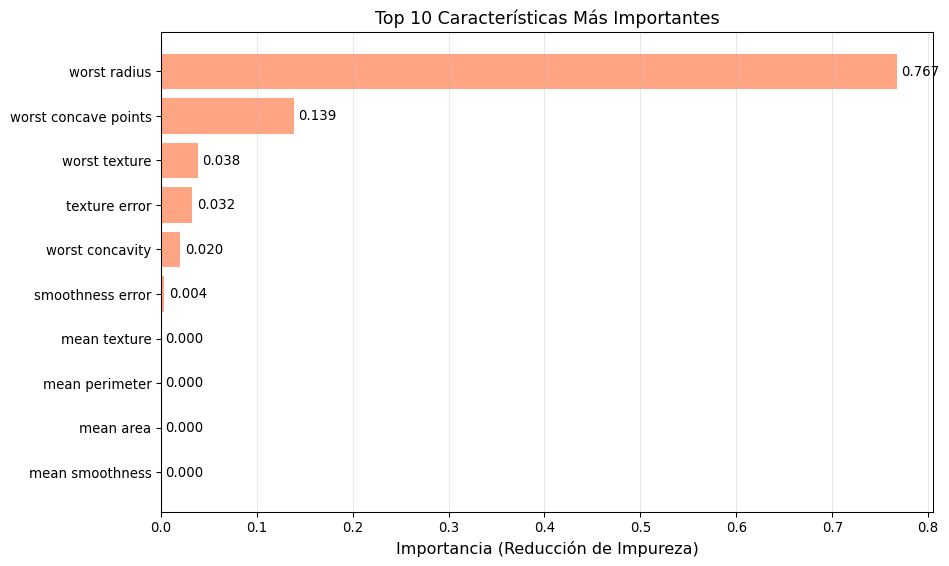
Top 10 características más importantes para clasificar cáncer de mama
Bagging de Árboles
Motivación: El Problema de la Alta Varianza
Como hemos visto, los árboles de decisión individuales sufren de alta varianza: pequeños cambios en los datos de entrenamiento pueden producir árboles completamente diferentes. Esta inestabilidad limita su capacidad de generalización.
Recordemos la descomposición bias-variance del error esperado:
Alta varianza: Son muy sensibles a los datos específicos de entrenamiento
Bagging (Bootstrap Aggregating) es una técnica que reduce la varianza sin aumentar significativamente el sesgo, mejorando así el desempeño general del modelo.
¿Qué es Bagging?
Bagging combina las predicciones de múltiples modelos entrenados en diferentes submuestras de los datos. La idea fundamental es:
“Si tenemos múltiples estimadores independientes con la misma distribución, el promedio de sus predicciones tiene la misma media (sesgo) pero menor varianza.”
El problema es que en la práctica no tenemos múltiples conjuntos de entrenamiento independientes. Bagging resuelve esto usando bootstrap.
El Algoritmo de Bagging
Algoritmo: Bagging para Árboles de Decisión
Entrada:
- Conjunto de entrenamiento D = {(x₁, y₁), ..., (xₙ, yₙ)}
- Número de árboles B
Para b = 1 hasta B:
1. Generar muestra bootstrap D*ᵦ:
- Muestrear n observaciones de D con reemplazo
- Aproximadamente 63% de las observaciones originales aparecerán al menos una vez
2. Entrenar árbol completo T*ᵦ en D*ᵦ:
- Sin poda (dejar crecer hasta profundidad máxima)
- min_samples_leaf puede ser mayor (ej: 5-10) para árboles más estables
Para predecir y = f(x) para nueva observación x:
- Regresión: ŷ(x) = (1/B) ∑ᵇ₌₁ᴮ T*ᵦ(x)
- Clasificación: ŷ(x) = mayoría de votos o promedio de probabilidades
Muestreo Bootstrap
En cada muestra bootstrap de tamaño \(n\):
≈ 63.2% de las observaciones originales aparecen al menos una vez
≈ 36.8% de las observaciones nunca son seleccionadas (llamadas out-of-bag o OOB)
Esto ocurre porque la probabilidad de que una observación NO sea seleccionada en \(n\) extracciones es:
En la práctica: \(0 < \rho(x) < 1\), mejora limitada pero significativa
Como las muestras bootstrap no son independientes (se extraen del mismo conjunto de datos), existe correlación positiva entre los árboles, lo que limita la reducción de varianza.
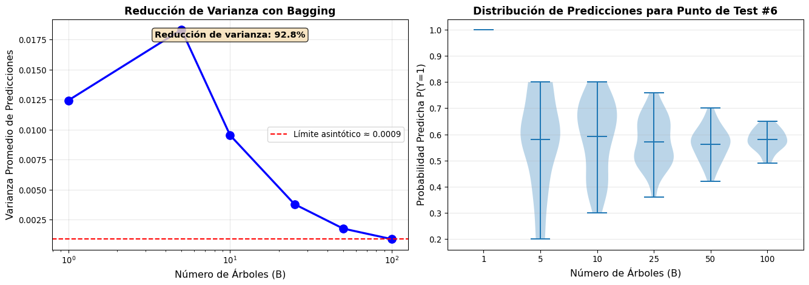
Análisis de la reducción de varianza con Bagging
Varianza de predicciones por número de árboles:
============================================================
B (árboles) Varianza Reducción %
------------------------------------------------------------
1 0.0124 0.0
5 0.0183 -47.3
10 0.0095 23.3
25 0.0038 69.4
50 0.0018 85.8
100 0.0009 92.8
Error Out-of-Bag (OOB)
Una ventaja única de bagging es que podemos estimar el error de test sin necesidad de un conjunto de validación separado, usando las observaciones out-of-bag.
Algoritmo para calcular OOB Error:
Para cada observación i en el conjunto de entrenamiento:
1. Identificar qué árboles NO usaron la observación i (≈ 36.8% de los árboles)
2. Obtener predicción promediando solo esos árboles: ŷᵢ^OOB
3. Comparar ŷᵢ^OOB con yᵢ
OOB Error = (1/n) ∑ᵢ₌₁ⁿ L(yᵢ, ŷᵢ^OOB)
El error OOB es una estimación casi insesgada del error de test, similar a validación cruzada leave-one-out pero mucho más eficiente computacionalmente.
from sklearn.metrics import accuracy_score# Entrenar bagging con OOB habilitadon_trees_range =range(1, 101, 5)oob_errors = []test_errors = []for n_trees in n_trees_range: bagging_oob = BaggingClassifier( estimator=DecisionTreeClassifier(), n_estimators=n_trees, bootstrap=True, oob_score=True, # Calcular OOB score random_state=42, n_jobs=-1 ) bagging_oob.fit(X_train, y_train)# OOB error oob_accuracy = bagging_oob.oob_score_ oob_errors.append(1- oob_accuracy)# Test error test_accuracy = bagging_oob.score(X_test, y_test) test_errors.append(1- test_accuracy)# Visualizaciónfig, axes = plt.subplots(1, 2, figsize=(12, 5))# Panel 1: Curvas de erroraxes[0].plot(n_trees_range, oob_errors, 'o-', label='OOB Error', linewidth=2, markersize=4, color='blue')axes[0].plot(n_trees_range, test_errors, 's-', label='Test Error', linewidth=2, markersize=4, color='red')axes[0].set_xlabel('Número de Árboles', fontsize=11)axes[0].set_ylabel('Tasa de Error', fontsize=11)axes[0].set_title('OOB Error vs Test Error', fontsize=12, fontweight='bold')axes[0].legend(fontsize=10)axes[0].grid(True, alpha=0.3)# Panel 2: Diferencia entre OOB y Testdifference = np.array(oob_errors) - np.array(test_errors)axes[1].plot(n_trees_range, difference, 'o-', linewidth=2, markersize=4, color='green')axes[1].axhline(y=0, color='black', linestyle='--', linewidth=1)axes[1].fill_between(n_trees_range, 0, difference, alpha=0.3, color='green')axes[1].set_xlabel('Número de Árboles', fontsize=11)axes[1].set_ylabel('OOB Error - Test Error', fontsize=11)axes[1].set_title('Diferencia entre OOB y Test Error', fontsize=12, fontweight='bold')axes[1].grid(True, alpha=0.3)plt.tight_layout()plt.show()print("\nComparación OOB vs Test Error:")print("="*60)print(f"Correlación entre OOB y Test Error: {np.corrcoef(oob_errors, test_errors)[0,1]:.3f}")print(f"Diferencia promedio: {np.mean(difference):.4f}")print(f"Desviación estándar de la diferencia: {np.std(difference):.4f}")
/Users/xwing/miniforge3/envs/mineria_datos/lib/python3.11/site-packages/sklearn/ensemble/_bagging.py:917: UserWarning: Some inputs do not have OOB scores. This probably means too few estimators were used to compute any reliable oob estimates.
warn(
/Users/xwing/miniforge3/envs/mineria_datos/lib/python3.11/site-packages/sklearn/ensemble/_bagging.py:923: RuntimeWarning: invalid value encountered in divide
oob_decision_function = predictions / predictions.sum(axis=1)[:, np.newaxis]
/Users/xwing/miniforge3/envs/mineria_datos/lib/python3.11/site-packages/sklearn/ensemble/_bagging.py:917: UserWarning: Some inputs do not have OOB scores. This probably means too few estimators were used to compute any reliable oob estimates.
warn(
/Users/xwing/miniforge3/envs/mineria_datos/lib/python3.11/site-packages/sklearn/ensemble/_bagging.py:923: RuntimeWarning: invalid value encountered in divide
oob_decision_function = predictions / predictions.sum(axis=1)[:, np.newaxis]
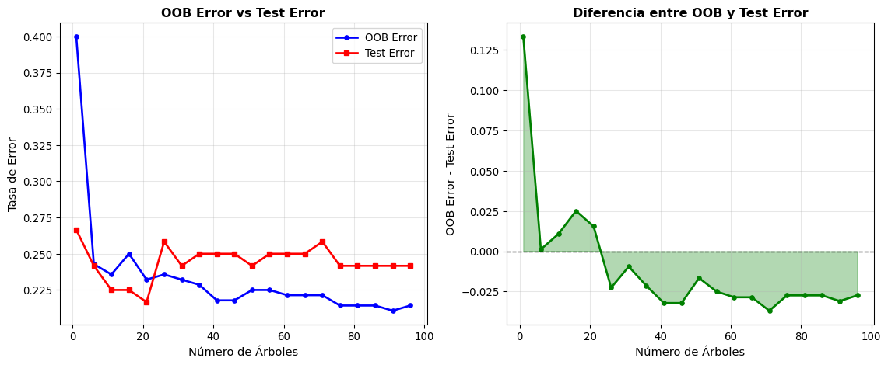
Comparación entre OOB Error y Test Error
Comparación OOB vs Test Error:
============================================================
Correlación entre OOB y Test Error: 0.345
Diferencia promedio: -0.0104
Desviación estándar de la diferencia: 0.0371
Importancia de Variables en Bagging
Bagging permite calcular la importancia de variables de manera más robusta que un árbol individual, usando el método de permutación propuesto por Breiman.
Algoritmo: Importancia por Permutación con OOB
Para cada variable k:
1. Para cada árbol T*ᵦ en el ensemble:
a. Calcular error OOB normal: Error_OOBᵦ
b. Permutar aleatoriamente los valores de variable k en datos OOB
c. Calcular error OOB con permutación: Error_OOB_permᵦ(k)
d. Degradación: Dₖ(T*ᵦ) = Error_OOB_permᵦ(k) - Error_OOBᵦ
2. Importancia(k) = (1/B) ∑ᵇ₌₁ᴮ Dₖ(T*ᵦ)
Variables importantes → Mayor degradación al permutar
Variables irrelevantes → Poca o ninguna degradación
Intuición: Si una variable es importante, romper su relación con la variable respuesta (mediante permutación) degrada significativamente las predicciones.
# Generar datos con más característicasfrom sklearn.datasets import make_classificationX_multi, y_multi = make_classification( n_samples=500, n_features=10, n_informative=6, n_redundant=2, n_repeated=0, random_state=42)X_train_m, X_test_m, y_train_m, y_test_m = train_test_split( X_multi, y_multi, test_size=0.3, random_state=42)feature_names_m = [f'X{i+1}'for i inrange(10)]# 1. Árbol individualtree_single = DecisionTreeClassifier(max_depth=10, random_state=42)tree_single.fit(X_train_m, y_train_m)importance_tree = tree_single.feature_importances_# 2. Baggingbagging_multi = BaggingClassifier( estimator=DecisionTreeClassifier(), n_estimators=100, bootstrap=True, oob_score=True, random_state=42, n_jobs=-1)bagging_multi.fit(X_train_m, y_train_m)# Calcular importancia promediando importancias de árboles individualesimportance_bagging = np.mean([ tree.feature_importances_ for tree in bagging_multi.estimators_], axis=0)# Visualización comparativafig, axes = plt.subplots(1, 2, figsize=(12, 5))# Panel 1: Árbol individualindices_tree = np.argsort(importance_tree)[::-1]axes[0].barh(range(10), importance_tree[indices_tree], color='steelblue', alpha=0.7)axes[0].set_yticks(range(10))axes[0].set_yticklabels([feature_names_m[i] for i in indices_tree])axes[0].set_xlabel('Importancia', fontsize=11)axes[0].set_title('Árbol Individual', fontsize=12, fontweight='bold')axes[0].grid(True, alpha=0.3, axis='x')# Panel 2: Baggingindices_bag = np.argsort(importance_bagging)[::-1]axes[1].barh(range(10), importance_bagging[indices_bag], color='coral', alpha=0.7)axes[1].set_yticks(range(10))axes[1].set_yticklabels([feature_names_m[i] for i in indices_bag])axes[1].set_xlabel('Importancia', fontsize=11)axes[1].set_title('Bagging (100 árboles)', fontsize=12, fontweight='bold')axes[1].grid(True, alpha=0.3, axis='x')plt.tight_layout()plt.show()print("Comparación de Accuracy:")print("="*60)print(f"Árbol individual: {tree_single.score(X_test_m, y_test_m):.3f}")print(f"Bagging (OOB): {bagging_multi.oob_score_:.3f}")print(f"Bagging (Test): {bagging_multi.score(X_test_m, y_test_m):.3f}")
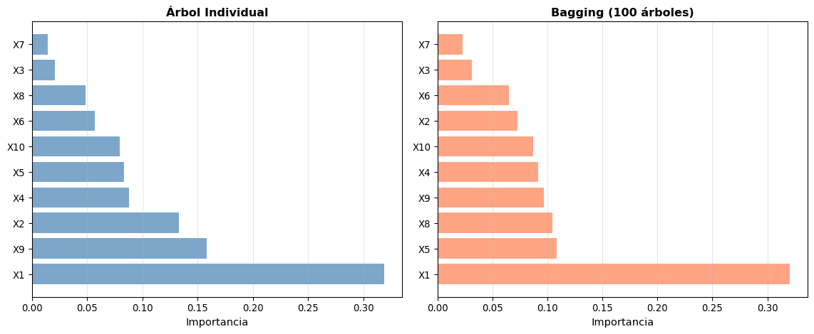
Importancia de variables en Bagging vs Árbol Individual
Fronteras de Decisión: Árbol Individual vs Bagging
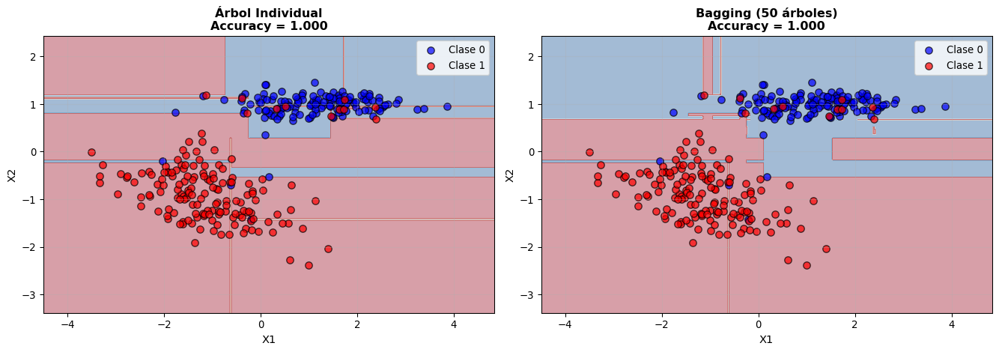
Comparación de fronteras de decisión: Árbol Individual vs Bagging
Observaciones:
El árbol individual crea fronteras muy complejas y sobreajustadas
Bagging suaviza las fronteras al promediar múltiples árboles, reduciendo overfitting
Las regiones de decisión en bagging son más estables y generalizables
Ventajas y Desventajas de Bagging
Ventajas de Bagging
Reducción de varianza: Mejora significativa sobre árboles individuales
Mantiene bajo sesgo: Usa árboles grandes sin poda
OOB error: Estimación de test error sin conjunto de validación adicional
Fácil paralelización: Árboles se entrenan independientemente
Importancia de variables robusta: Menos sensible a variabilidad en datos
Raramente sobreajusta: Aumentar \(B\) no degrada desempeño en test
Hereda ventajas de árboles: Robusto a outliers, maneja datos mixtos
Desventajas de Bagging
Correlación entre árboles: Limita reducción de varianza (todos usan mismos datos)
Pérdida de interpretabilidad: Ya no tenemos un árbol simple de visualizar
Costo computacional: Entrenar y almacenar múltiples árboles
Predicción más lenta: Debe consultar todos los árboles para una predicción
Mejora modesta: Random Forest supera a bagging al decorrelacionar más los árboles
¿Cuántos Árboles Usar?
# Evaluar convergencian_trees_conv =range(1, 201, 5)train_scores_conv = []test_scores_conv = []for n_trees in n_trees_conv: bagging_conv = BaggingClassifier( estimator=DecisionTreeClassifier(), n_estimators=n_trees, bootstrap=True, random_state=42, n_jobs=-1 ) bagging_conv.fit(X_train, y_train) train_scores_conv.append(bagging_conv.score(X_train, y_train)) test_scores_conv.append(bagging_conv.score(X_test, y_test))# Visualizaciónplt.figure(figsize=(10, 6))plt.plot(n_trees_conv, train_scores_conv, label='Entrenamiento', linewidth=2, color='blue', alpha=0.7)plt.plot(n_trees_conv, test_scores_conv, label='Prueba', linewidth=2.5, color='red')plt.xlabel('Número de Árboles (B)', fontsize=12)plt.ylabel('Accuracy', fontsize=12)plt.title('Convergencia de Bagging con Número de Árboles', fontsize=13, fontweight='bold')plt.legend(fontsize=11)plt.grid(True, alpha=0.3)# Marcar punto de convergencia (cambio < 0.001)diffs = np.abs(np.diff(test_scores_conv))convergence_idx = np.where(diffs <0.001)[0][0] ifany(diffs <0.001) elselen(n_trees_conv)-1convergence_B = n_trees_conv[convergence_idx]plt.axvline(x=convergence_B, color='green', linestyle='--', linewidth=2, label=f'Convergencia ≈ B={convergence_B}')plt.legend(fontsize=11)plt.tight_layout()plt.show()print("Recomendación sobre número de árboles:")print("="*60)print(f"Convergencia aproximada en: B = {convergence_B}")print(f"Test accuracy en B={convergence_B}: {test_scores_conv[convergence_idx]:.4f}")print(f"Test accuracy en B={n_trees_conv[-1]}: {test_scores_conv[-1]:.4f}")print(f"\nEn la práctica:")print(" - B = 50-100: Generalmente suficiente")print(" - B = 500-1000: Común en producción para máxima estabilidad")print(" - Más árboles → Más computación pero nunca daña (no overfitting)")
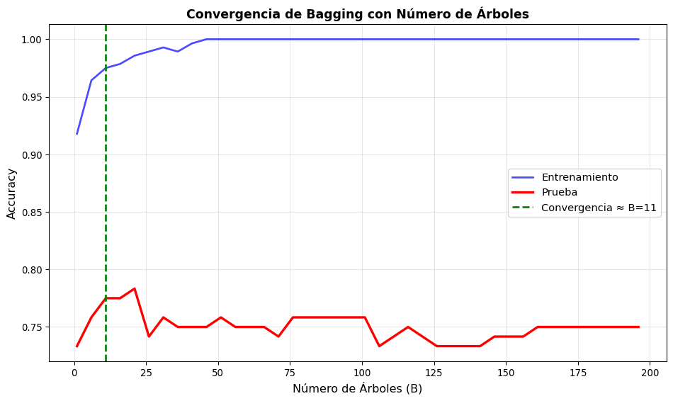
Convergencia del accuracy con el número de árboles en Bagging
Recomendación sobre número de árboles:
============================================================
Convergencia aproximada en: B = 11
Test accuracy en B=11: 0.7750
Test accuracy en B=196: 0.7500
En la práctica:
- B = 50-100: Generalmente suficiente
- B = 500-1000: Común en producción para máxima estabilidad
- Más árboles → Más computación pero nunca daña (no overfitting)
Bagging vs Random Forest
Aunque bagging es efectivo, en la práctica Random Forest es mucho más popular. La principal diferencia es:
Bagging:
Cada árbol usa todas las características en cada división
Árboles están correlacionados porque usan las mismas variables
Random Forest:
Cada división considera solo una muestra aleatoria de características (típicamente \(\sqrt{p}\) o \(p/3\))
Mayor decorrelación entre árboles → Mayor reducción de varianza
Veamos ahora en detalle cómo funciona Random Forest.
Random Forest
Motivación: Decorrelación de Árboles
Como vimos, bagging reduce la varianza promediando múltiples árboles entrenados en muestras bootstrap. Sin embargo, la reducción está limitada por la correlación entre árboles:
Cuando \(B \to \infty\), la varianza converge a \(\sigma^2(x) \cdot \rho(x)\), no a cero.
Problema en bagging: Si existe una característica muy predictiva, todos los árboles la usarán en las primeras divisiones, haciendo que los árboles se parezcan mucho entre sí.
Solución de Random Forest: Forzar decorrelación restringiendo las características disponibles en cada división.
El Algoritmo de Random Forest
Random Forest extiende bagging añadiendo aleatorización en la selección de características:
Algoritmo: Random Forest
Entrada:
- Conjunto de entrenamiento D = {(x₁, y₁), ..., (xₙ, yₙ)}
- Número de árboles B
- Número de características por división m (típicamente √p para clasificación, p/3 para regresión)
Para b = 1 hasta B:
1. Generar muestra bootstrap D*ᵦ de tamaño n
2. Construir árbol T*ᵦ en D*ᵦ con modificación:
En cada división del árbol:
a) Seleccionar m características aleatorias del total p
b) Encontrar mejor división usando SOLO esas m características
c) Realizar la división
3. Guardar árbol completo T*ᵦ (sin poda)
Predicción para nueva observación x:
- Clasificación: ŷ(x) = voto mayoritario de {T*₁(x), ..., T*ᵦ(x)}
- Regresión: ŷ(x) = (1/B) ∑ᵇ₌₁ᴮ T*ᵦ(x)
Diferencia clave con bagging: En cada nodo, solo se consideran \(m < p\) características aleatorias para la división.
Hiperparámetros Clave
1. Número de árboles (B o n_estimators)
Valores típicos: 100-500
Más árboles → Mejor (no hay overfitting), pero mayor costo computacional
Recomendación: Empezar con 100-200
2. Número de características por división (m o max_features)
Clasificación: \(m = \sqrt{p}\) (default en scikit-learn)
Regresión: \(m = p/3\) (default en scikit-learn)
Valores más pequeños → Mayor decorrelación pero mayor sesgo
Valores más grandes → Menor decorrelación pero menor sesgo
3. Profundidad del árbol (max_depth)
Default: None (árboles completos)
Random Forest usa árboles muy profundos, la regularización viene del ensemble
Limitar solo si hay problemas de memoria o tiempo de entrenamiento
4. Tamaño mínimo de hoja (min_samples_leaf)
Valores típicos: 1 (clasificación), 5 (regresión)
Mayor → Árboles más suaves, menor varianza
5. Número de muestras para dividir (min_samples_split)
COMPARACIÓN: Árbol → Bagging → Random Forest
======================================================================
1. Árbol Individual
----------------------------------------------------------------------
Train Accuracy: 1.0000
Test Accuracy: 0.7667
Overfitting: 0.2333
2. Bagging (100 árboles)
----------------------------------------------------------------------
Train Accuracy: 1.0000
OOB Accuracy: 0.8629
Test Accuracy: 0.8400
Overfitting: 0.1600
3. Random Forest (100 árboles, max_features='sqrt')
----------------------------------------------------------------------
Train Accuracy: 1.0000
OOB Accuracy: 0.8743
Test Accuracy: 0.8800
Overfitting: 0.1200
======================================================================
RESUMEN DE MEJORAS
======================================================================
Test Accuracy improvement (Árbol → Bagging): +0.0733
Test Accuracy improvement (Bagging → RF): +0.0400
Test Accuracy improvement (Árbol → RF): +0.1133
Análisis del Efecto de max_features
from sklearn.model_selection import cross_val_score# Probar diferentes valores de max_featuresmax_features_values = [1, 2, 3, 5, 'sqrt', 'log2', None]max_features_labels = []train_scores_mf = []test_scores_mf = []cv_scores_mf = []for mf in max_features_values: rf = RandomForestClassifier( n_estimators=100, max_features=mf, random_state=42, n_jobs=-1 ) rf.fit(X_train, y_train) train_scores_mf.append(rf.score(X_train, y_train)) test_scores_mf.append(rf.score(X_test, y_test))# Cross-validation cv_scores = cross_val_score(rf, X_train, y_train, cv=5, n_jobs=-1) cv_scores_mf.append(cv_scores.mean())# Etiqueta para el gráficoif mf =='sqrt': label =f'sqrt ({int(np.sqrt(X.shape[1]))})'elif mf =='log2': label =f'log2 ({int(np.log2(X.shape[1]))})'elif mf isNone: label =f'All ({X.shape[1]})'else: label =str(mf) max_features_labels.append(label)# Visualizaciónfig, axes = plt.subplots(1, 2, figsize=(12, 5))# Panel 1: Accuracy por max_featuresx_pos = np.arange(len(max_features_labels))width =0.25axes[0].bar(x_pos - width, train_scores_mf, width, label='Train', alpha=0.8, color='blue')axes[0].bar(x_pos, cv_scores_mf, width, label='CV (5-fold)', alpha=0.8, color='green')axes[0].bar(x_pos + width, test_scores_mf, width, label='Test', alpha=0.8, color='red')axes[0].set_xlabel('max_features', fontsize=11)axes[0].set_ylabel('Accuracy', fontsize=11)axes[0].set_title('Impacto de max_features en Random Forest', fontsize=12, fontweight='bold')axes[0].set_xticks(x_pos)axes[0].set_xticklabels(max_features_labels, rotation=45, ha='right')axes[0].legend()axes[0].grid(True, alpha=0.3, axis='y')# Panel 2: Overfitting (Train - Test gap)overfitting_gap = np.array(train_scores_mf) - np.array(test_scores_mf)colors = ['red'if gap >0.1else'orange'if gap >0.05else'green'for gap in overfitting_gap]axes[1].bar(x_pos, overfitting_gap, color=colors, alpha=0.7, edgecolor='black')axes[1].axhline(y=0, color='black', linestyle='-', linewidth=1)axes[1].set_xlabel('max_features', fontsize=11)axes[1].set_ylabel('Train Accuracy - Test Accuracy', fontsize=11)axes[1].set_title('Gap de Overfitting por max_features', fontsize=12, fontweight='bold')axes[1].set_xticks(x_pos)axes[1].set_xticklabels(max_features_labels, rotation=45, ha='right')axes[1].grid(True, alpha=0.3, axis='y')# Añadir leyenda de coloresfrom matplotlib.patches import Patchlegend_elements = [ Patch(facecolor='green', alpha=0.7, label='Bajo (<0.05)'), Patch(facecolor='orange', alpha=0.7, label='Moderado (0.05-0.10)'), Patch(facecolor='red', alpha=0.7, label='Alto (>0.10)')]axes[1].legend(handles=legend_elements, title='Overfitting', loc='upper right')plt.tight_layout()plt.show()# Encontrar mejor max_featuresbest_idx = np.argmax(test_scores_mf)print(f"\nMejor max_features: {max_features_labels[best_idx]}")print(f"Test Accuracy: {test_scores_mf[best_idx]:.4f}")
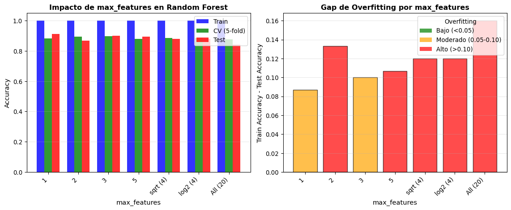
Impacto del número de características (max_features) en Random Forest
Mejor max_features: 1
Test Accuracy: 0.9133
Curva de Aprendizaje: Número de Árboles
# Evaluar convergencia con número de árbolesn_trees_range =range(1, 201, 5)train_scores_conv = []oob_scores_conv = []test_scores_conv = []for n_trees in n_trees_range: rf_conv = RandomForestClassifier( n_estimators=n_trees, max_features='sqrt', oob_score=True, random_state=42, n_jobs=-1 ) rf_conv.fit(X_train, y_train) train_scores_conv.append(rf_conv.score(X_train, y_train)) oob_scores_conv.append(rf_conv.oob_score_) test_scores_conv.append(rf_conv.score(X_test, y_test))# Visualizaciónfig, axes = plt.subplots(1, 2, figsize=(12, 5))# Panel 1: Accuracy vs Número de Árbolesaxes[0].plot(n_trees_range, train_scores_conv, label='Train', linewidth=2, alpha=0.7)axes[0].plot(n_trees_range, oob_scores_conv, label='OOB', linewidth=2, alpha=0.7)axes[0].plot(n_trees_range, test_scores_conv, label='Test', linewidth=2.5)axes[0].set_xlabel('Número de Árboles', fontsize=11)axes[0].set_ylabel('Accuracy', fontsize=11)axes[0].set_title('Convergencia de Random Forest', fontsize=12, fontweight='bold')axes[0].legend()axes[0].grid(True, alpha=0.3)# Marcar punto de convergenciadiffs = np.abs(np.diff(test_scores_conv))ifany(diffs <0.001): conv_idx = np.where(diffs <0.001)[0][0] conv_trees = n_trees_range[conv_idx] axes[0].axvline(x=conv_trees, color='red', linestyle='--', linewidth=2, label=f'Convergencia ≈ {conv_trees}') axes[0].legend()# Panel 2: Variabilidad de Test Accuracywindow_size =10rolling_std = pd.Series(test_scores_conv).rolling(window=window_size).std()axes[1].plot(n_trees_range, test_scores_conv, 'o-', markersize=3, label='Test Accuracy')axes[1].plot(n_trees_range, rolling_std, linewidth=2, color='red', label=f'Desv. Std. (ventana={window_size})')axes[1].set_xlabel('Número de Árboles', fontsize=11)axes[1].set_ylabel('Valor', fontsize=11)axes[1].set_title('Estabilización del Test Accuracy', fontsize=12, fontweight='bold')axes[1].legend()axes[1].grid(True, alpha=0.3)plt.tight_layout()plt.show()print(f"\nRecomendación:")print(f" - Accuracy estabiliza alrededor de {conv_trees ifany(diffs <0.001) else'N/A'} árboles")print(f" - Test accuracy final (200 árboles): {test_scores_conv[-1]:.4f}")print(f" - Variabilidad final: {rolling_std.iloc[-1]:.5f}")
/Users/xwing/miniforge3/envs/mineria_datos/lib/python3.11/site-packages/sklearn/ensemble/_forest.py:611: UserWarning: Some inputs do not have OOB scores. This probably means too few trees were used to compute any reliable OOB estimates.
warn(
/Users/xwing/miniforge3/envs/mineria_datos/lib/python3.11/site-packages/sklearn/ensemble/_forest.py:611: UserWarning: Some inputs do not have OOB scores. This probably means too few trees were used to compute any reliable OOB estimates.
warn(
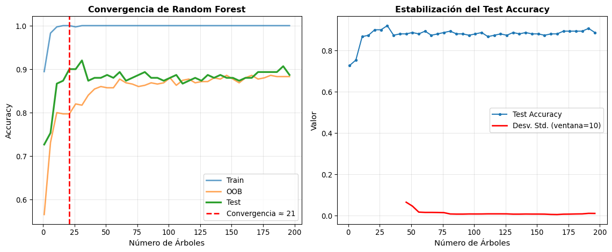
Convergencia de Random Forest con el número de árboles
Recomendación:
- Accuracy estabiliza alrededor de 21 árboles
- Test accuracy final (200 árboles): 0.8867
- Variabilidad final: 0.00984
Importancia de Variables en Random Forest
Random Forest proporciona dos medidas de importancia:
1. Mean Decrease in Impurity (MDI) - Default en scikit-learn
Comparación de fronteras de decisión con diferentes métodos
Observaciones:
Árbol individual: Fronteras muy irregulares, sobreajuste evidente
Bagging: Fronteras más suaves pero aún correlacionadas
Random Forest: Fronteras más suaves y generalizables
Análisis de Sesgo-Varianza
# Experimento: entrenar múltiples modelos en diferentes muestras bootstrapn_experiments =50n_test_points =30X_test_sample = X_test[:n_test_points]y_test_sample = y_test[:n_test_points]# Almacenar prediccionespredictions_bagging = []predictions_rf = []for exp inrange(n_experiments):# Generar muestra bootstrap del training set indices = np.random.choice(len(X_train), size=len(X_train), replace=True) X_boot = X_train[indices] y_boot = y_train[indices]# Bagging bag = BaggingClassifier( estimator=DecisionTreeClassifier(), n_estimators=50, random_state=exp, n_jobs=-1 ) bag.fit(X_boot, y_boot) pred_bag = bag.predict_proba(X_test_sample)[:, 1] predictions_bagging.append(pred_bag)# Random Forest rf = RandomForestClassifier( n_estimators=50, max_features='sqrt', random_state=exp, n_jobs=-1 ) rf.fit(X_boot, y_boot) pred_rf = rf.predict_proba(X_test_sample)[:, 1] predictions_rf.append(pred_rf)predictions_bagging = np.array(predictions_bagging)predictions_rf = np.array(predictions_rf)# Calcular varianza por punto de testvariance_bagging = np.var(predictions_bagging, axis=0)variance_rf = np.var(predictions_rf, axis=0)# Visualizaciónfig, axes = plt.subplots(1, 2, figsize=(12, 5))# Panel 1: Comparación de varianzasaxes[0].scatter(range(n_test_points), variance_bagging, label='Bagging', alpha=0.6, s=60, color='blue')axes[0].scatter(range(n_test_points), variance_rf, label='Random Forest', alpha=0.6, s=60, color='red')axes[0].axhline(y=np.mean(variance_bagging), color='blue', linestyle='--', linewidth=2, alpha=0.5, label='Media Bagging')axes[0].axhline(y=np.mean(variance_rf), color='red', linestyle='--', linewidth=2, alpha=0.5, label='Media RF')axes[0].set_xlabel('Punto de Test', fontsize=11)axes[0].set_ylabel('Varianza de Predicciones', fontsize=11)axes[0].set_title('Varianza por Punto de Test', fontsize=12, fontweight='bold')axes[0].legend()axes[0].grid(True, alpha=0.3)# Panel 2: Distribución de varianzasaxes[1].hist(variance_bagging, bins=15, alpha=0.6, label='Bagging', color='blue', edgecolor='black')axes[1].hist(variance_rf, bins=15, alpha=0.6, label='Random Forest', color='red', edgecolor='black')axes[1].axvline(x=np.mean(variance_bagging), color='blue', linestyle='--', linewidth=2)axes[1].axvline(x=np.mean(variance_rf), color='red', linestyle='--', linewidth=2)axes[1].set_xlabel('Varianza', fontsize=11)axes[1].set_ylabel('Frecuencia', fontsize=11)axes[1].set_title('Distribución de Varianzas', fontsize=12, fontweight='bold')axes[1].legend()axes[1].grid(True, alpha=0.3, axis='y')plt.tight_layout()plt.show()# Estadísticasprint("\nEstadísticas de Varianza:")print("="*70)print(f"{'Método':<20}{'Media':<15}{'Std':<15}{'Reducción vs Bagging':<20}")print("-"*70)mean_var_bag = np.mean(variance_bagging)mean_var_rf = np.mean(variance_rf)reduction = (mean_var_bag - mean_var_rf) / mean_var_bag *100print(f"{'Bagging':<20}{mean_var_bag:<15.6f}{np.std(variance_bagging):<15.6f}{'-':<20}")print(f"{'Random Forest':<20}{mean_var_rf:<15.6f}{np.std(variance_rf):<15.6f}{reduction:.2f}%")
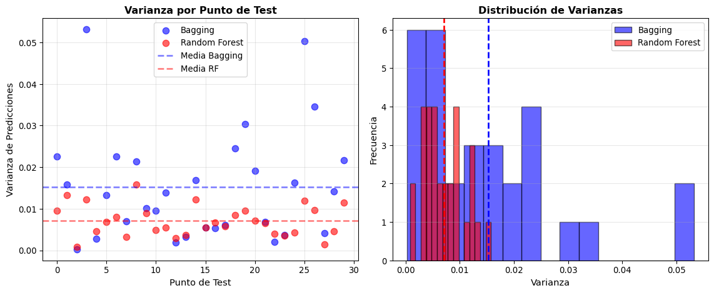
Análisis de Sesgo-Varianza: Bagging vs Random Forest
Estadísticas de Varianza:
======================================================================
Método Media Std Reducción vs Bagging
----------------------------------------------------------------------
Bagging 0.015281 0.013155 -
Random Forest 0.007110 0.003668 53.47%
Ventajas y Desventajas de Random Forest
Ventajas de Random Forest
Excelente desempeño out-of-the-box: Pocos hiperparámetros que ajustar
Reducción de varianza superior a bagging: Gracias a la decorrelación
Robusto al sobreajuste: Aumentar árboles no degrada test performance
OOB error: Estimación gratuita de error de test
Importancia de variables: Dos métodos complementarios (MDI y permutación)
Paralelizable: Árboles se entrenan independientemente
Maneja datos mixtos: Numéricas y categóricas sin preprocesamiento
Robusto a outliers y ruido: Hereda esta propiedad de los árboles
Pocas suposiciones: No asume distribuciones específicas de los datos
Desventajas de Random Forest
Pérdida de interpretabilidad: No es un modelo simple de visualizar
Costo computacional: Mayor que árboles individuales
Predicción lenta: Debe consultar todos los árboles (puede optimizarse)
Uso de memoria: Debe almacenar todos los árboles
No extrapola: Solo interpola dentro del rango de los datos de entrenamiento
Menos efectivo en datos muy de alta dimensión: Cuando p >> n
Sesgo hacia variables con muchos valores: En importancia MDI
Aplicación Práctica: Dataset Real
from sklearn.datasets import load_breast_cancerfrom sklearn.model_selection import GridSearchCV, cross_val_scorefrom sklearn.metrics import classification_report, confusion_matriximport pandas as pd# Cargar datoscancer = load_breast_cancer()X_cancer = cancer.datay_cancer = cancer.targetX_train_c, X_test_c, y_train_c, y_test_c = train_test_split( X_cancer, y_cancer, test_size=0.3, random_state=42, stratify=y_cancer)print("APLICACIÓN: Wisconsin Breast Cancer Dataset")print("="*70)print(f"Muestras: {X_cancer.shape[0]} | Características: {X_cancer.shape[1]}")print(f"Clases: {cancer.target_names}")print(f"Distribución: {dict(zip(*np.unique(y_cancer, return_counts=True)))}")# 1. Random Forest con parámetros defaultprint("\n1. RANDOM FOREST (parámetros default)")print("-"*70)rf_default = RandomForestClassifier(random_state=42, n_jobs=-1)rf_default.fit(X_train_c, y_train_c)train_acc_default = rf_default.score(X_train_c, y_train_c)test_acc_default = rf_default.score(X_test_c, y_test_c)print(f"Train Accuracy: {train_acc_default:.4f}")print(f"Test Accuracy: {test_acc_default:.4f}")# 2. Optimización de hiperparámetrosprint("\n2. OPTIMIZACIÓN DE HIPERPARÁMETROS (Grid Search)")print("-"*70)param_grid = {'n_estimators': [50, 100, 200],'max_features': ['sqrt', 'log2'],'max_depth': [None, 10, 20, 30],'min_samples_split': [2, 5, 10],'min_samples_leaf': [1, 2, 4]}grid_search = GridSearchCV( RandomForestClassifier(random_state=42, n_jobs=-1), param_grid, cv=5, scoring='accuracy', n_jobs=-1, verbose=0)print("Buscando mejores hiperparámetros (esto puede tomar un momento)...")grid_search.fit(X_train_c, y_train_c)print(f"\nMejores hiperparámetros encontrados:")for param, value in grid_search.best_params_.items():print(f" {param}: {value}")# 3. Evaluar mejor modeloprint("\n3. EVALUACIÓN DEL MEJOR MODELO")print("-"*70)best_rf = grid_search.best_estimator_train_acc_best = best_rf.score(X_train_c, y_train_c)test_acc_best = best_rf.score(X_test_c, y_test_c)print(f"Train Accuracy: {train_acc_best:.4f}")print(f"Test Accuracy: {test_acc_best:.4f}")# Validación cruzadacv_scores = cross_val_score(best_rf, X_train_c, y_train_c, cv=5, n_jobs=-1)print(f"CV Accuracy: {cv_scores.mean():.4f} (±{cv_scores.std():.4f})")# Reporte de clasificacióny_pred = best_rf.predict(X_test_c)print("\nReporte de Clasificación:")print(classification_report(y_test_c, y_pred, target_names=cancer.target_names))# Matriz de confusiónprint("Matriz de Confusión:")cm = confusion_matrix(y_test_c, y_pred)print(cm)
APLICACIÓN: Wisconsin Breast Cancer Dataset
======================================================================
Muestras: 569 | Características: 30
Clases: ['malignant' 'benign']
Distribución: {np.int64(0): np.int64(212), np.int64(1): np.int64(357)}
1. RANDOM FOREST (parámetros default)
----------------------------------------------------------------------
Train Accuracy: 1.0000
Test Accuracy: 0.9357
2. OPTIMIZACIÓN DE HIPERPARÁMETROS (Grid Search)
----------------------------------------------------------------------
Buscando mejores hiperparámetros (esto puede tomar un momento)...
Mejores hiperparámetros encontrados:
max_depth: None
max_features: sqrt
min_samples_leaf: 1
min_samples_split: 2
n_estimators: 100
3. EVALUACIÓN DEL MEJOR MODELO
----------------------------------------------------------------------
Train Accuracy: 1.0000
Test Accuracy: 0.9357
CV Accuracy: 0.9725 (±0.0330)
Reporte de Clasificación:
precision recall f1-score support
malignant 0.92 0.91 0.91 64
benign 0.94 0.95 0.95 107
accuracy 0.94 171
macro avg 0.93 0.93 0.93 171
weighted avg 0.94 0.94 0.94 171
Matriz de Confusión:
[[ 58 6]
[ 5 102]]
# Importancia de variablesimportances = best_rf.feature_importances_indices = np.argsort(importances)[::-1][:10]fig, axes = plt.subplots(1, 2, figsize=(12, 6))# Panel 1: Importancia MDIaxes[0].barh(range(10), importances[indices], color='steelblue', alpha=0.7)axes[0].set_yticks(range(10))axes[0].set_yticklabels([cancer.feature_names[i] for i in indices])axes[0].invert_yaxis()axes[0].set_xlabel('Importancia (MDI)', fontsize=11)axes[0].set_title('Top 10 Características (MDI)', fontsize=12, fontweight='bold')axes[0].grid(True, alpha=0.3, axis='x')for i, imp inenumerate(importances[indices]): axes[0].text(imp +0.002, i, f'{imp:.3f}', va='center', fontsize=9)# Panel 2: Permutation Importanceperm_imp = permutation_importance( best_rf, X_test_c, y_test_c, n_repeats=10, random_state=42, n_jobs=-1)perm_indices = np.argsort(perm_imp.importances_mean)[::-1][:10]axes[1].barh(range(10), perm_imp.importances_mean[perm_indices], xerr=perm_imp.importances_std[perm_indices], color='coral', alpha=0.7, capsize=3)axes[1].set_yticks(range(10))axes[1].set_yticklabels([cancer.feature_names[i] for i in perm_indices])axes[1].invert_yaxis()axes[1].set_xlabel('Importancia (Permutación)', fontsize=11)axes[1].set_title('Top 10 Características (Permutación)', fontsize=12, fontweight='bold')axes[1].grid(True, alpha=0.3, axis='x')plt.tight_layout()plt.show()
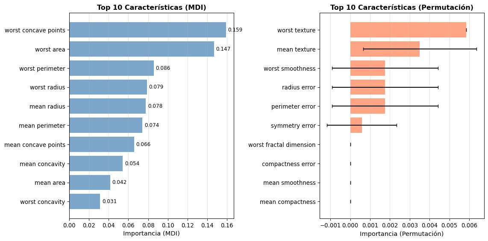
Top 10 características más importantes para diagnóstico de cáncer (Random Forest)
Conclusiones y Mejores Prácticas
Recomendaciones para Usar Árboles de Decisión
Comienza simple: Empieza con árboles poco profundos (max_depth=3-5)
Usa validación cruzada: Para seleccionar hiperparámetros óptimos
Considera la interpretabilidad: Si necesitas explicar decisiones, mantén árboles pequeños
Combina con ensemble: Para producción, considera Random Forest o Gradient Boosting
Analiza importancia de variables: Para entender qué características son relevantes
Visualiza el árbol: Ayuda a detectar problemas y entender el modelo
Compara con baselines: Árbol vs regresión logística en datos lineales
Cuándo Usar Árboles de Decisión
Usar árboles cuando: - Necesitas interpretabilidad - Tienes interacciones complejas entre variables - Variables numéricas y categóricas mezcladas - Outliers en los datos - Recursos computacionales limitados (árboles son rápidos)
Evitar árboles individuales cuando: - Datos con relaciones predominantemente lineales - Necesitas el mejor desempeño predictivo (usar ensemble) - Tienes muy pocos datos (alta varianza) - Variables con muchas categorías (sesgo en selección)
Próximos Pasos: Métodos Ensemble
Los árboles individuales tienen limitaciones, pero combinándolos podemos crear modelos extremadamente poderosos: